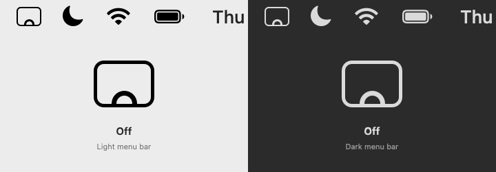
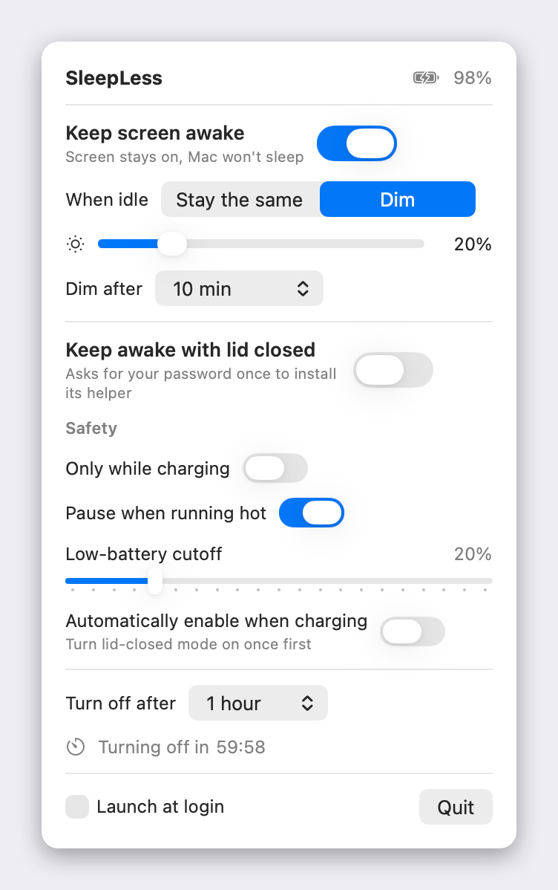
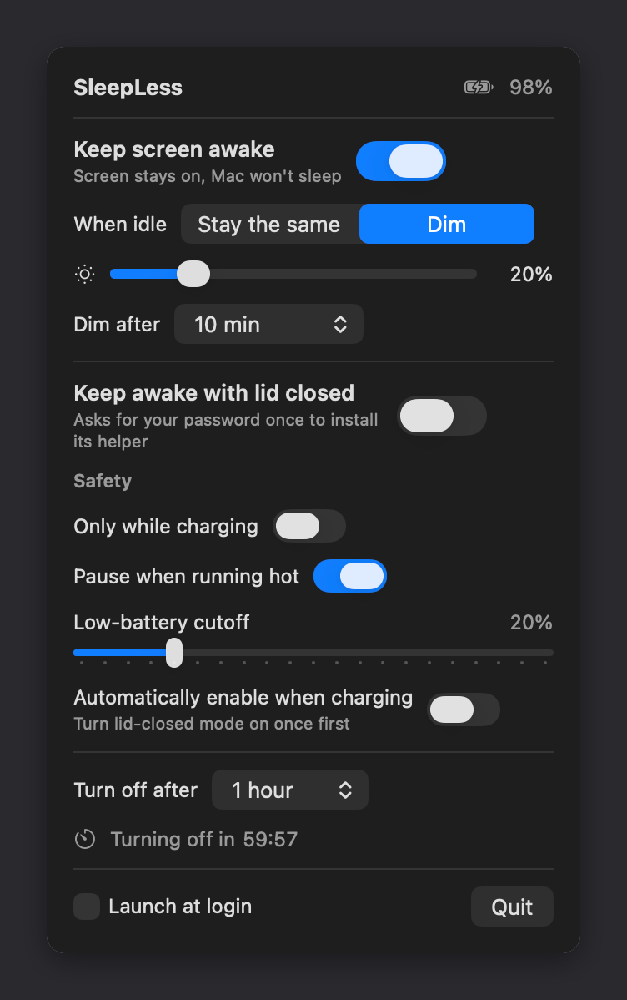

Lives in your menu bar
A screen with the app icon's sunrise inside. Off is a hollow sun resting on the bottom of the screen. Turn SleepLess on and the sun climbs in and five rays fan out one after another; they breathe slowly while it is on, and it all sets again when it turns off. In lid-closed mode the sun lifts to the middle of the screen as a full disc. It is a template image, so it fits light and dark menu bars, and the animation pauses while your screens sleep.

Everything you need, nothing you don't
One panel, a handful of switches, and guard rails so it never bites you.
Keep screen awake
Lid open: the screen never idle-dims or sleeps and the Mac never idle-sleeps — the same assertions as caffeinate -di. No admin rights.
Dim while idle
Stay the same, or dim to a brightness you pick after 30 s to 10 min. Any key press or mouse move brings your brightness straight back. Never brightens a screen already below the target.
Keep awake with lid closed
Sets the one flag that beats lid-close sleep on Apple Silicon (SleepDisabled) through a tiny root helper you approve once with your password. Close the lid and the screen and keyboard light go dark while everything keeps running — no unlock when you open it.
Safety cut-offs
Only while charging. Pause when running hot. Low-battery cutoff (default 20 %). Turn on when you plug in, off when you unplug. All under one Safety disclosure with a one-line summary.
Turn off after
15 min to 4 hours with a live countdown and progress bar, then everything turns off and normal sleep is back.
One click on, one click off
A quick click on the menu-bar icon turns SleepLess on (bringing back the modes you last had on) or off. Press and hold, or right-click, for the settings panel.
Watchdog
If the app crashes or hangs, the helper restores normal sleep within about two minutes; quitting normally restores it immediately. Your Mac can never get stuck unable to sleep.
How it works
Two different problems, two different mechanisms — both readable in a few hundred lines of Swift and one shell script.
Lid open
SleepLess holds two IOKit power assertions, PreventUserIdleDisplaySleep and PreventUserIdleSystemSleep, and releases them the moment you turn it off or quit. Dimming uses the same private DisplayServices brightness calls the keyboard keys use, and watches the session idle time to restore your brightness on the first input.
Lid closed
1 or 0 to a request file and rewrites it every 30 s.pmset -a disablesleep 1|0 to match.0 — the watchdog. The helper only undoes a SleepDisabled it set itself.The panel reads the live SleepDisabled flag, so it shows whether lid-closed mode is really active — and tells you if something else has disabled sleep.
The panel
Press and hold the menu-bar icon (or right-click it). A status header that says what is happening, a card per mode, the safety rules one click away, and a timer with a live countdown. Light or dark, it follows your Mac — and Reduce Motion, Increase Contrast, the keyboard and VoiceOver.


Download & install
Grab the installer, drag SleepLess into Applications, and you're done.
- Open the DMG and drag SleepLess into Applications.
- Open SleepLess from Applications. It isn't notarized by Apple yet, so the first launch needs one extra step: macOS 15 or later — when macOS says it can't verify the app, click Done, open System Settings → Privacy & Security, scroll down and click Open Anyway; macOS 13–14 — right-click SleepLess, choose Open, then Open again. Only the first time.
Or build it from source
A few seconds with Xcode or the Command Line Tools (xcode-select --install):
git clone https://github.com/CyborgFingers/SleepLess.git
cd SleepLess
./build.sh installBuilds build/SleepLess.app, copies it to /Applications and launches it. Look for the screen-with-a-sunrise icon in the menu bar (if you use Bartender or Ice, or the bar is crowded near the notch, it may be tucked away there). Click it to turn SleepLess on or off; press and hold it, or right-click, for the settings panel. Turning on lid-closed mode asks for your password once. To uninstall, quit SleepLess, run sudo /bin/sh /Applications/SleepLess.app/Contents/Resources/sleepless-helper.sh uninstall (removes the helper and restores normal sleep) and move the app to the Trash — or ./build.sh uninstall from a source checkout.
- Test it:
SleepLess.app/Contents/MacOS/SleepLess --selftestchecks brightness, assertions, battery and the click logic;./test-helper.shchecks the helper's watchdog with a fakepmset. - Privacy: no network, no analytics. The helper only ever runs
pmset; any process running as your user could write the request file, but the worst case is a Mac that stays awake, and the watchdog still applies.